Introduction
Outlier detection in functional data identifies curves that are atypical or anomalous compared to the rest of the sample. fdars provides several methods based on functional depth and likelihood ratio tests.
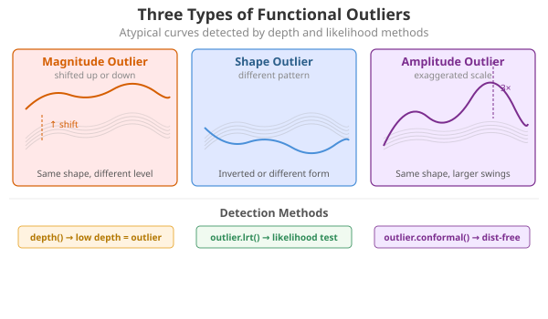
Depth-Based Methods
Depth-based outlier detection identifies curves with unusually low depth (far from the center of the data).
Weighted Depth Method (outliers.depth.pond)
Uses bootstrap resampling to estimate the distribution of depths and identifies curves with depth below a data-driven cutoff. The function supports three different methods for computing the threshold.
Threshold Methods
| Method | Formula | When to Use |
|---|---|---|
"quantile" |
quantile(depths, quan) |
When you expect a specific proportion of outliers |
"mad" |
median - k × MAD |
More robust when outliers may already exist |
"iqr" |
Q1 - k × IQR |
Boxplot-style detection |
Default: 95th percentile threshold
(quan = 0.05), which flags curves in the bottom 5% of
depths as outliers.
# Default: quantile method with quan = 0.05 (95th percentile, flags bottom 5%)
out_pond <- outliers.depth.pond(fd, nb = 1000)
print(out_pond)
#> Functional data outlier detection
#> Number of observations: 30
#> Number of outliers: 3
#> Outlier indices: 1 2 3
#> Threshold method: quantile
#> Depth cutoff: 0.0591
#> Outlier p-values: 0.0323, 0.0645, 0.0968Comparing Threshold Methods
# Quantile method: flags curves with depth in the bottom 5% (default)
out_quantile <- outliers.depth.pond(fd, nb = 1000,
threshold_method = "quantile", quan = 0.05)
cat("Quantile (5%): ", out_quantile$outliers, "\n")
#> Quantile (5%): 1 2 3
# More permissive: bottom 10%
out_quantile10 <- outliers.depth.pond(fd, nb = 1000,
threshold_method = "quantile", quan = 0.1)
cat("Quantile (10%):", out_quantile10$outliers, "\n")
#> Quantile (10%): 1 2 3
# MAD method: more robust, uses median - 2.5*MAD
out_mad <- outliers.depth.pond(fd, nb = 1000,
threshold_method = "mad", k = 2.5)
cat("MAD (k=2.5): ", out_mad$outliers, "\n")
#> MAD (k=2.5): 1 2 3
# IQR method: boxplot-like, uses Q1 - 1.5*IQR
out_iqr <- outliers.depth.pond(fd, nb = 1000,
threshold_method = "iqr", k = 1.5)
cat("IQR (k=1.5): ", out_iqr$outliers, "\n")
#> IQR (k=1.5): 1 2 3Choosing the right method:
Quantile (default): Uses a fixed proportion cutoff. The default
quan = 0.05(95th percentile) flags the bottom 5% of curves. Increase toquan = 0.1for more permissive detection.MAD: More robust to existing outliers in the data. The default
k = 2.5corresponds roughly to a 1-2% false positive rate. Increasekfor stricter detection (fewer outliers).IQR: Similar to boxplot fences. The default
k = 1.5is the standard boxplot rule. Usek = 3.0for “far outliers” only.
Examining Results
# Which curves are outliers?
out_pond$outliers
#> [1] 1 2 3
# Depth values for all curves
head(out_pond$depths)
#> [1] 0.03333337 0.05506193 0.05477837 0.87274161 0.86959674 0.86759472
# Cutoff used
cat("Cutoff:", out_pond$cutoff, "\n")
#> Cutoff: 0.05905061
cat("Threshold method:", out_pond$threshold_method, "\n")
#> Threshold method: quantileUnderstanding depth.pond Results
The outliers.depth.pond method uses bootstrap resampling
to estimate what depth values are “normal” for your dataset.
Key behaviors:
- Edge curves: Curves near the boundary of the data cloud naturally have lower depth, even if they’re not true outliers
-
Bootstrap variability: Small samples give unstable
cutoffs - use at least
nb = 200for stable results -
Threshold choice matters: The
quantilemethod with a fixed proportion will always flag that proportion as outliers. Usemadoriqrfor data-driven thresholds that adapt to the actual depth distribution.
Recommendation: Start with
threshold_method = "mad" for a robust, data-driven
approach. Adjust k based on how conservative you want the
detection to be.
Compare with outliers.depth.trim which uses a fixed trim
proportion - more predictable but requires you to choose the
proportion.
Trimming-Based Method (outliers.depth.trim)
Iteratively removes curves with lowest depth:
out_trim <- outliers.depth.trim(fd, trim = 0.1, seed = 123)
print(out_trim)
#> Functional data outlier detection
#> Number of observations: 30
#> Number of outliers: 3
#> Outlier indices: 1 2 3
#> Depth cutoff: 0.7817
#> Outlier p-values: 0.0323, 0.0968, 0.0645
plot(out_trim)
Using Different Depth Functions
Both methods accept a depth parameter to specify the
depth function:
# Using Random Projection depth
out_rp <- outliers.depth.pond(fd, nb = 1000, seed = 123)
# Using modal depth (default is FM)
out_mode <- outliers.depth.trim(fd, trim = 0.1, seed = 123)Likelihood Ratio Test (LRT) Method
The LRT method uses a likelihood ratio test to sequentially identify outliers. It’s particularly effective for detecting magnitude outliers.
Automatic Threshold Computation
The LRT method automatically computes a bootstrap threshold based on a percentile of the maximum distance distribution under the null hypothesis (no outliers). By default, the 99th percentile is used, meaning approximately 1% of observations would be flagged as outliers when there are no true outliers.
# The outliers.lrt function automatically computes the threshold
out_lrt <- outliers.lrt(fd, nb = 1000, seed = 123)
print(out_lrt)
#> Functional data outlier detection
#> Number of observations: 30
#> Number of outliers: 3
#> Outlier indices: 1 2 3
#> LRT threshold: 1.5905 (99th percentile)
#> Outlier p-values: 0.001, 0.001, 0.001
plot(out_lrt)
Configuring the Percentile
The percentile parameter controls the sensitivity of the
LRT method:
- Higher percentile (e.g., 0.99): More conservative, fewer false positives
- Lower percentile (e.g., 0.95): More sensitive, may catch more subtle outliers
# Default: 99th percentile (conservative)
out_lrt_99 <- outliers.lrt(fd, nb = 1000, seed = 123, percentile = 0.99)
cat("99th percentile outliers:", out_lrt_99$outliers, "\n")
#> 99th percentile outliers: 1 2 3
# More sensitive: 95th percentile
out_lrt_95 <- outliers.lrt(fd, nb = 1000, seed = 123, percentile = 0.95)
cat("95th percentile outliers:", out_lrt_95$outliers, "\n")
#> 95th percentile outliers: 1 2 3Manual Threshold Computation
You can also compute the threshold separately if you want to examine it or apply a custom threshold:
# Compute threshold separately (99th percentile by default)
threshold_99 <- outliers.thres.lrt(fd, nb = 1000, seed = 123)
cat("LRT threshold (99th percentile):", threshold_99, "\n")
#> LRT threshold (99th percentile): 1.590504
# Or with a different percentile
threshold_95 <- outliers.thres.lrt(fd, nb = 1000, seed = 123, percentile = 0.95)
cat("LRT threshold (95th percentile):", threshold_95, "\n")
#> LRT threshold (95th percentile): 1.53227Full Bootstrap Distribution (outliers.lrt.dist)
For finer-grained inference, outliers.lrt.dist() returns
both the threshold and the full sorted bootstrap null distribution. This
enables per-curve p-value computation and visualization of the null
distribution:
lrt_dist <- outliers.lrt.dist(fd, nb = 1000, seed = 123, percentile = 0.99)
cat("Threshold:", round(lrt_dist$threshold, 4), "\n")
#> Threshold: 32.8872
cat("Bootstrap distribution: n =", length(lrt_dist$boot.distribution),
", range = [", round(min(lrt_dist$boot.distribution), 3), ",",
round(max(lrt_dist$boot.distribution), 3), "]\n")
#> Bootstrap distribution: n = 1000 , range = [ 1.173 , 33.766 ]Visualize the null distribution with the threshold:
df_boot <- data.frame(max_distance = lrt_dist$boot.distribution)
ggplot(df_boot, aes(x = .data$max_distance)) +
geom_histogram(bins = 30, fill = "steelblue", color = "white", alpha = 0.7) +
geom_vline(xintercept = lrt_dist$threshold, color = "red",
linewidth = 1, linetype = "dashed") +
annotate("text", x = lrt_dist$threshold, y = Inf,
label = paste0("99th percentile = ", round(lrt_dist$threshold, 3)),
vjust = 2, hjust = -0.1, color = "red", size = 3.5) +
labs(title = "Bootstrap Null Distribution of Maximum Distances",
subtitle = "Red line = threshold for outlier detection",
x = "Maximum Distance", y = "Count")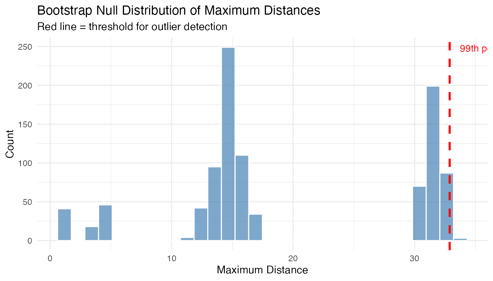
Compute per-curve p-values from the bootstrap distribution:
# Distance of each curve from the centre
curve_depths <- depth.FM(fd)
curve_distances <- max(curve_depths) - curve_depths # convert depth to distance
# Per-curve p-value: fraction of bootstrap maxima >= curve's distance
p_values <- sapply(curve_distances, function(d) {
mean(lrt_dist$boot.distribution >= d)
})
cat("P-values for curves 1-3 (true outliers):", round(p_values[1:3], 4), "\n")
#> P-values for curves 1-3 (true outliers): 1 1 1
cat("P-values for curves 4-6 (normal):", round(p_values[4:6], 4), "\n")
#> P-values for curves 4-6 (normal): 1 1 1LRT Results
# Outlier indices
out_lrt$outliers
#> [1] 1 2 3
# Distance from center for each curve
head(out_lrt$distances)
#> [1] 31.8376666 14.7867965 14.8123083 0.9054476 0.9640895 1.0402349
# Threshold used
out_lrt$threshold
#> [1] 1.590504
# Bootstrap-calibrated p-values (smaller = more outlying)
cat("P-values for detected outliers:",
round(out_lrt$p.value[out_lrt$outliers], 4), "\n")
#> P-values for detected outliers: 0.001 0.001 0.001
# Bootstrap null distribution (sorted max distances from B bootstrap samples)
cat("Bootstrap null distribution: n =", length(out_lrt$boot_dist),
", range = [", round(min(out_lrt$boot_dist), 3), ",",
round(max(out_lrt$boot_dist), 3), "]\n")
#> Bootstrap null distribution: n = 1000 , range = [ 1.104 , 1.693 ]When LRT Works Best
The LRT method is specifically optimized for magnitude outliers - curves that are shifted up or down relative to the main data cloud. It computes how far each curve is from the center (mean) of the data.
What LRT detects well: - Curves shifted up or down (magnitude outliers) - Curves with unusual overall level
What LRT may miss: - Shape outliers (different pattern but similar overall level) - Amplitude outliers (scaled versions centered at the same level)
Using the threshold
(outliers.thres.lrt()):
The threshold represents the critical value of the LRT statistic. Use it to:
- Apply a custom significance level
- Compare test statistics across different datasets
- Combine with domain knowledge for decision-making
If LRT detects no outliers when you expect some: 1. The outliers may
be shape-based rather than magnitude-based 2. Try depth-based methods
(outliers.depth.pond or outliers.depth.trim)
instead 3. Use the outliergram or MS-plot for visual detection
Comparing Methods
Different methods may detect different types of outliers:
# Run all methods
out1 <- outliers.depth.pond(fd, nb = 1000, seed = 123)
out2 <- outliers.depth.trim(fd, trim = 0.1, seed = 123)
out3 <- outliers.lrt(fd, nb = 1000, seed = 123)
# Compare detected outliers
cat("Depth-pond outliers:", out1$outliers, "\n")
#> Depth-pond outliers: 1 2 3
cat("Depth-trim outliers:", out2$outliers, "\n")
#> Depth-trim outliers: 1 2 3
cat("LRT outliers:", out3$outliers, "\n")
#> LRT outliers: 1 2 3
# True outliers are curves 1, 2, 3
cat("True outliers: 1, 2, 3\n")
#> True outliers: 1, 2, 3Quantifying Outlierness
Binary outlier/not labels don’t tell the full story. Every method in fdars now returns a continuous outlierness score and a p-value for each curve.
# Run three methods on the same data
out_pond <- outliers.depth.pond(fd, nb = 1000, seed = 123)
ms <- magnitudeshape(fd)
og <- outliergram(fd)
# Each method now has p.value and outlierness fields
cat("depth.pond p-values (curves 1-3):", round(out_pond$p.value[1:3], 4), "\n")
#> depth.pond p-values (curves 1-3): 0.0323 0.0968 0.0645
cat("magnitudeshape p-values (curves 1-3):", round(ms$p.value[1:3], 4), "\n")
#> magnitudeshape p-values (curves 1-3): 0 0 0
cat("outliergram p-values (curves 1-3):", round(og$p.value[1:3], 4), "\n")
#> outliergram p-values (curves 1-3): 1 0.0645 0.0968The outlier_summary() function provides a unified ranked
view of any outlier detection result:
# Ranked summary from depth.pond
summary_pond <- outlier_summary(out_pond)
head(summary_pond, 10)
#> index outlierness p.value is_outlier
#> 1 1 0.9677419 0.03225806 TRUE
#> 3 3 0.9354839 0.06451613 TRUE
#> 2 2 0.9032258 0.09677419 TRUE
#> 10 10 0.8709677 0.12903226 FALSE
#> 30 30 0.8387097 0.16129032 FALSE
#> 29 29 0.8064516 0.19354839 FALSE
#> 23 23 0.7741935 0.22580645 FALSE
#> 27 27 0.7419355 0.25806452 FALSE
#> 26 26 0.7096774 0.29032258 FALSE
#> 6 6 0.6774194 0.32258065 FALSE
# Compare how different methods rank curves
rankings <- data.frame(
curve = 1:n,
pond = out_pond$outlierness,
ms = ms$outlierness,
outliergram = og$outlierness,
type = ifelse(1:n %in% 1:3, "Outlier", "Normal")
)
# Reshape for plotting
library(ggplot2)
df_rank <- data.frame(
curve = rep(1:n, 3),
outlierness = c(rankings$pond, rankings$ms, rankings$outliergram),
method = rep(c("depth.pond", "magnitudeshape", "outliergram"), each = n),
type = rep(rankings$type, 3)
)
ggplot(df_rank, aes(x = factor(curve), y = outlierness, fill = type)) +
geom_col(alpha = 0.7) +
facet_wrap(~method, scales = "free_y", ncol = 1) +
scale_fill_manual(values = c("Normal" = "gray60", "Outlier" = "red")) +
labs(title = "Outlierness Scores by Method",
x = "Curve Index", y = "Outlierness", fill = "") +
theme(axis.text.x = element_text(size = 6))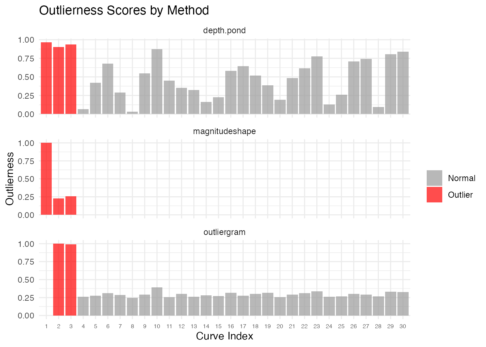
Statistical Significance
Each method now provides per-curve p-values. These allow a formal hypothesis test: “Is this curve an outlier at significance level ?”
Chi-squared P-values (magnitudeshape)
The magnitude-shape method uses a chi-squared test with 2 degrees of
freedom. The squared distance dist_sq follows a
distribution under the null:
ms <- magnitudeshape(fd)
# Show p-values for all curves
df_pval <- data.frame(
curve = 1:n,
dist_sq = ms$dist_sq,
p.value = ms$p.value,
is_outlier = ifelse(1:n %in% ms$outliers, "Outlier", "Normal")
)
# Curves 1-3 are true outliers
df_pval[c(1:3, 4:6), ]
#> curve dist_sq p.value is_outlier
#> 1 1 66965.537056 0.00000000 Outlier
#> 2 2 15377.686287 0.00000000 Outlier
#> 3 3 17135.681408 0.00000000 Outlier
#> 4 4 111.714303 0.00000000 Outlier
#> 5 5 6.251769 0.04389808 Normal
#> 6 6 0.628857 0.73020607 NormalBootstrap-calibrated P-values (LRT)
The LRT method provides bootstrap-calibrated p-values: each curve’s distance is compared against the null distribution of maximum distances from B bootstrap samples. This gives a proper calibration — the p-value answers: “what fraction of bootstrap null samples produced a maximum distance at least as extreme as this curve’s distance?”
out_lrt <- outliers.lrt(fd, nb = 1000, seed = 123)
cat("LRT p-values for true outliers (1-3):",
round(out_lrt$p.value[1:3], 4), "\n")
#> LRT p-values for true outliers (1-3): 0.001 0.001 0.001
cat("LRT p-values for normal curves (4-6):",
round(out_lrt$p.value[4:6], 4), "\n")
#> LRT p-values for normal curves (4-6): 1 1 1
cat("Bootstrap null distribution size:", length(out_lrt$boot_dist), "\n")
#> Bootstrap null distribution size: 1000Rank-based P-values (depth methods)
For depth-based methods (outliers.depth.pond,
outliers.depth.trim), p-values are rank-based: a curve with
the lowest depth gets the smallest p-value.
Multiple Testing Correction
When testing many curves simultaneously, apply FDR correction:
# Adjust p-values for multiple comparisons
p_adjusted <- p.adjust(ms$p.value, method = "BH")
# Compare raw vs adjusted
cat("Raw p-values (curves 1-3):", round(ms$p.value[1:3], 4), "\n")
#> Raw p-values (curves 1-3): 0 0 0
cat("BH-adjusted (curves 1-3):", round(p_adjusted[1:3], 4), "\n")
#> BH-adjusted (curves 1-3): 0 0 0
# Decision at alpha = 0.05
sig_raw <- which(ms$p.value < 0.05)
sig_adj <- which(p_adjusted < 0.05)
cat("Significant (raw):", sig_raw, "\n")
#> Significant (raw): 1 2 3 4 5 10 17 30
cat("Significant (BH-adjusted):", sig_adj, "\n")
#> Significant (BH-adjusted): 1 2 3 4Detection Sensitivity and the Role of Noise
How strong must an outlier be before a method reliably detects it? The answer depends not just on the signal strength (shift, frequency change, or scale factor) but also on the noise level. A shift of 2 units is obvious at but invisible at . What matters is the signal-to-noise ratio (SNR).
To quantify this properly, we use a power analysis: for each combination of signal strength and noise level, we run 20 independent replications and record the detection rate — the fraction of replications where the injected outlier (curve 1) is flagged. A detection rate of 80% or higher means the method reliably catches that anomaly; below 50% the method is essentially guessing.
n_test <- 30
m_test <- 100
t_test <- seq(0, 1, length.out = m_test)
n_rep <- 20 # replications per grid point
noise_sds <- c(0.2, 0.5, 0.75, 1.0, 1.5) # shared across all grids
# Helper: compute detection rate over n_rep replications
detection_rate <- function(shifts, noise_sds, inject_fn, detect_fn) {
grid <- expand.grid(signal = shifts, noise_sd = noise_sds)
grid$rate <- NA_real_
for (r in seq_len(nrow(grid))) {
sig <- grid$signal[r]
sd_val <- grid$noise_sd[r]
n_det <- 0L
for (rep_i in seq_len(n_rep)) {
set.seed(rep_i * 1000L)
X <- matrix(0, n_test, m_test)
for (i in seq_len(n_test))
X[i, ] <- sin(2 * pi * t_test) + rnorm(m_test, sd = sd_val)
X[1, ] <- inject_fn(sig, sd_val)
fd <- fdata(X, argvals = t_test)
if (detect_fn(fd, rep_i)) n_det <- n_det + 1L
}
grid$rate[r] <- n_det / n_rep
}
grid
}
# Helper: compute rect boundaries for non-uniform grids (no white gaps)
add_rect_bounds <- function(df, x_col, y_col) {
midbreaks <- function(v) {
u <- sort(unique(v))
mids <- (u[-1] + u[-length(u)]) / 2
c(u[1] - (mids[1] - u[1]), mids,
u[length(u)] + (u[length(u)] - mids[length(mids)]))
}
xb <- midbreaks(df[[x_col]])
yb <- midbreaks(df[[y_col]])
xs <- sort(unique(df[[x_col]]))
ys <- sort(unique(df[[y_col]]))
xi <- match(df[[x_col]], xs)
yi <- match(df[[y_col]], ys)
df$xmin <- xb[xi]; df$xmax <- xb[xi + 1]
df$ymin <- yb[yi]; df$ymax <- yb[yi + 1]
df
}Magnitude Detection Power
We inject a magnitude outlier (vertical shift) and test with
outliers.lrt. The LRT uses a likelihood ratio test with
bootstrap calibration, giving well-calibrated detection across a wide
range of signal-to-noise ratios.
mag_shifts <- c(0, 0.25, 0.5, 0.75, 1.0, 1.5, 2.0, 3.0, 4.0)
mag_grid <- detection_rate(
mag_shifts, noise_sds,
inject_fn = function(sig, sd_val) sin(2 * pi * t_test) + sig,
detect_fn = function(fd, rep_i) {
res <- outliers.lrt(fd, nb = 200, seed = rep_i)
1L %in% res$outliers
}
)
mag_grid <- add_rect_bounds(mag_grid, "signal", "noise_sd")
ggplot(mag_grid, aes(fill = rate)) +
geom_rect(aes(xmin = xmin, xmax = xmax, ymin = ymin, ymax = ymax)) +
geom_contour(aes(x = signal, y = noise_sd, z = rate), breaks = 0.5,
color = "white", linewidth = 1, linetype = "dashed") +
geom_contour(aes(x = signal, y = noise_sd, z = rate), breaks = 0.8,
color = "white", linewidth = 1.2) +
scale_fill_viridis_c(option = "D", limits = c(0, 1),
labels = scales::percent,
name = "Detection\nRate") +
labs(title = "Magnitude Outlier: Detection Power (LRT)",
subtitle = "Solid contour = 80% power, dashed = 50%",
x = "Shift Magnitude", y = "Noise SD") +
theme(legend.position = "right")
#> Warning: The following aesthetics were dropped during statistical transformation: fill.
#> ℹ This can happen when ggplot fails to infer the correct grouping structure in
#> the data.
#> ℹ Did you forget to specify a `group` aesthetic or to convert a numerical
#> variable into a factor?
#> The following aesthetics were dropped during statistical transformation: fill.
#> ℹ This can happen when ggplot fails to infer the correct grouping structure in
#> the data.
#> ℹ Did you forget to specify a `group` aesthetic or to convert a numerical
#> variable into a factor?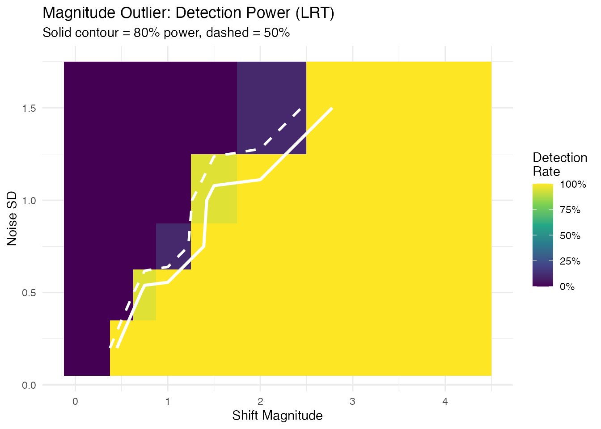
The detection frontier (80% contour) follows a diagonal, confirming that the shift-to-noise ratio — not shift or noise alone — determines detectability.
Shape Detection Power
We inject a shape outlier (altered frequency) and test with
outliergram. The outliergram detects curves with anomalous
relationships between modified band depth and modified epigraph index —
a rank-based approach.
shape_freqs <- c(1.0, 1.5, 2.0, 2.5, 3.0, 4.0)
shape_grid <- detection_rate(
shape_freqs, noise_sds,
inject_fn = function(sig, sd_val) sin(sig * 2 * pi * t_test),
detect_fn = function(fd, rep_i) {
res <- outliergram(fd)
1L %in% res$outliers
}
)
shape_grid <- add_rect_bounds(shape_grid, "signal", "noise_sd")
ggplot(shape_grid, aes(fill = rate)) +
geom_rect(aes(xmin = xmin, xmax = xmax, ymin = ymin, ymax = ymax)) +
geom_contour(aes(x = signal, y = noise_sd, z = rate), breaks = 0.5,
color = "white", linewidth = 1, linetype = "dashed") +
geom_contour(aes(x = signal, y = noise_sd, z = rate), breaks = 0.8,
color = "white", linewidth = 1.2) +
scale_fill_viridis_c(option = "D", limits = c(0, 1),
labels = scales::percent,
name = "Detection\nRate") +
labs(title = "Shape Outlier: Detection Power (Outliergram)",
subtitle = "Solid contour = 80% power, dashed = 50%",
x = "Frequency Multiplier", y = "Noise SD") +
theme(legend.position = "right")
#> Warning: The following aesthetics were dropped during statistical transformation: fill.
#> ℹ This can happen when ggplot fails to infer the correct grouping structure in
#> the data.
#> ℹ Did you forget to specify a `group` aesthetic or to convert a numerical
#> variable into a factor?
#> The following aesthetics were dropped during statistical transformation: fill.
#> ℹ This can happen when ggplot fails to infer the correct grouping structure in
#> the data.
#> ℹ Did you forget to specify a `group` aesthetic or to convert a numerical
#> variable into a factor?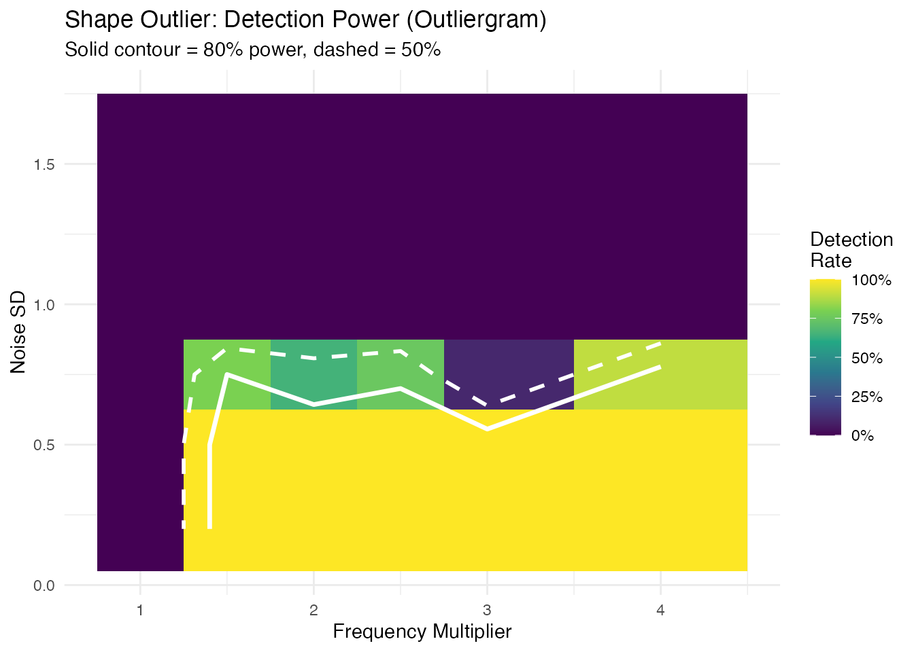
Unlike magnitude detection, the shape detection boundary is nearly horizontal: when noise exceeds the signal amplitude ( for a unit-amplitude sine), rank ordering is destroyed and detection power collapses. Below that threshold, any frequency multiplier is caught.
Amplitude Detection Power
We inject an amplitude outlier (scaled curve) and test with
outliers.lrt.
amp_scales <- c(1.0, 1.25, 1.5, 2.0, 2.5, 3.0, 4.0)
amp_grid <- detection_rate(
amp_scales, noise_sds,
inject_fn = function(sig, sd_val) sig * sin(2 * pi * t_test),
detect_fn = function(fd, rep_i) {
res <- outliers.lrt(fd, nb = 200, seed = rep_i)
1L %in% res$outliers
}
)
amp_grid <- add_rect_bounds(amp_grid, "signal", "noise_sd")
ggplot(amp_grid, aes(fill = rate)) +
geom_rect(aes(xmin = xmin, xmax = xmax, ymin = ymin, ymax = ymax)) +
geom_contour(aes(x = signal, y = noise_sd, z = rate), breaks = 0.5,
color = "white", linewidth = 1, linetype = "dashed") +
geom_contour(aes(x = signal, y = noise_sd, z = rate), breaks = 0.8,
color = "white", linewidth = 1.2) +
scale_fill_viridis_c(option = "D", limits = c(0, 1),
labels = scales::percent,
name = "Detection\nRate") +
labs(title = "Amplitude Outlier: Detection Power (LRT)",
subtitle = "Solid contour = 80% power, dashed = 50%",
x = "Scale Factor", y = "Noise SD") +
theme(legend.position = "right")
#> Warning: The following aesthetics were dropped during statistical transformation: fill.
#> ℹ This can happen when ggplot fails to infer the correct grouping structure in
#> the data.
#> ℹ Did you forget to specify a `group` aesthetic or to convert a numerical
#> variable into a factor?
#> The following aesthetics were dropped during statistical transformation: fill.
#> ℹ This can happen when ggplot fails to infer the correct grouping structure in
#> the data.
#> ℹ Did you forget to specify a `group` aesthetic or to convert a numerical
#> variable into a factor?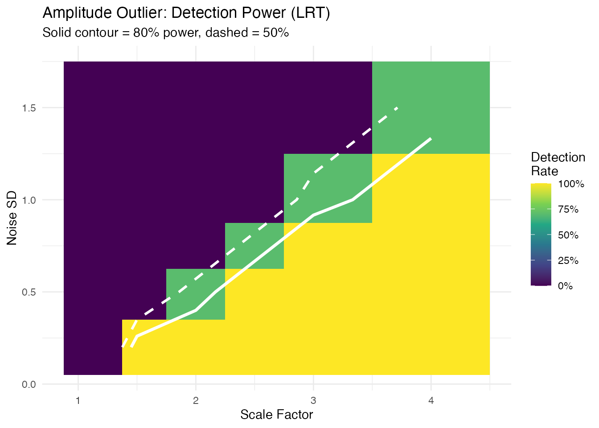
Minimum Detectable Effect
For each noise level and outlier type, the smallest signal achieving 80% detection rate:
mde_at <- function(grid, threshold = 0.8) {
noise_levels <- sort(unique(grid$noise_sd))
max_sig <- max(grid$signal)
do.call(rbind, lapply(noise_levels, function(sd_val) {
sub <- grid[grid$noise_sd == sd_val & grid$signal > min(grid$signal), ]
det <- sub$signal[sub$rate >= threshold]
val <- if (length(det) > 0) as.character(min(det))
else paste0(">", max_sig)
data.frame(noise_sd = sd_val, min_signal = val,
stringsAsFactors = FALSE)
}))
}
mde_mag <- mde_at(mag_grid)
mde_shape <- mde_at(shape_grid)
mde_amp <- mde_at(amp_grid)
mde_table <- data.frame(
`Noise SD` = noise_sds,
`Min Shift` = mde_mag$min_signal,
`Min Freq Mult` = mde_shape$min_signal,
`Min Scale` = mde_amp$min_signal,
check.names = FALSE
)
knitr::kable(mde_table,
caption = "Minimum detectable effect (80% power, n = 30 curves)")| Noise SD | Min Shift | Min Freq Mult | Min Scale |
|---|---|---|---|
| 0.20 | 0.5 | 1.5 | 1.5 |
| 0.50 | 0.75 | 1.5 | 2.5 |
| 0.75 | 1.5 | 1.5 | 3 |
| 1.00 | 1.5 | >4 | 4 |
| 1.50 | 3 | >4 | >4 |
Practical Rules of Thumb
- Magnitude outliers (LRT): the detection frontier follows a diagonal — roughly shift is needed. At , you need a shift of ~1; at , you need ~3–4.
- Shape outliers (outliergram): detection is noise-robust up to a threshold. When noise SD approaches the signal amplitude ( for a unit sine), rank ordering collapses and no frequency change is detectable. Below that, even 50% frequency changes are caught.
- Amplitude outliers (LRT): similar diagonal pattern to magnitude — scale factor is detectable at , but at you need 3x scaling.
- In practice: estimate your noise level from the data (e.g., pointwise SD of residuals after removing the mean curve), then consult the table above to determine whether your expected anomaly size is detectable.
Process Monitoring Decision Framework
Method Selection
| Question | Recommended Method | Decision Rule |
|---|---|---|
| Is the curve shifted? | outliers.lrt |
p.value < 0.05 |
| Is the shape unusual? | outliergram |
p.value < 0.05 |
| Both types? | magnitudeshape |
p.value < 0.05 (chi-sq) |
| How extreme is it? | Any method |
outlierness score |
| Is detection sensitive enough? | Sensitivity analysis | Min detectable severity |
Practical Guidance
Multiple testing: When screening many curves, apply Benjamini-Hochberg correction to control the false discovery rate:
Bootstrap precision: For the LRT method, use
nb >= 999 for stable p-values at
.
The rule of thumb is
.
Combining methods: When using multiple methods on
the same data, consider Bonferroni correction
(alpha / n_methods) or use the magnitudeshape method which
jointly tests magnitude and shape.
Streaming monitoring: For real-time applications,
use streaming_depth_one() with depth-based p-values to flag
anomalies as they arrive. See the streaming depth article for details.
Types of Outliers
Magnitude Outliers
Curves shifted up or down from the main group:
# Create clean data with just a magnitude outlier
X_mag <- matrix(0, n, m)
for (i in 1:n) {
X_mag[i, ] <- sin(2 * pi * t_grid) + rnorm(m, sd = 0.1)
}
X_mag[1, ] <- sin(2 * pi * t_grid) + 3 # Large vertical shift
fd_mag <- fdata(X_mag, argvals = t_grid)
# Visualize the magnitude outlier
plot(fd_mag) +
labs(title = "Magnitude Outlier: Curve 1 Shifted Up",
subtitle = "Same shape as others, but at a different level")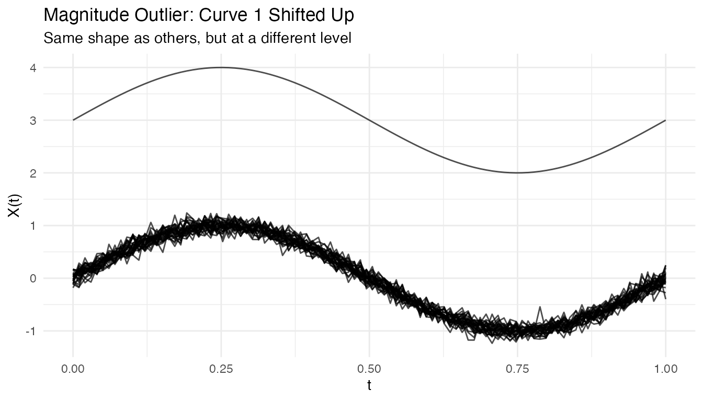
out_mag <- outliers.depth.pond(fd_mag, nb = 1000, seed = 123)
cat("Detected magnitude outlier:", out_mag$outliers, "\n")
#> Detected magnitude outlier: 1Shape Outliers
Curves with different patterns but similar overall level:
# Create clean data with just a shape outlier
X_shape <- matrix(0, n, m)
for (i in 1:n) {
X_shape[i, ] <- sin(2 * pi * t_grid) + rnorm(m, sd = 0.1)
}
X_shape[1, ] <- -sin(2 * pi * t_grid) # Inverted (phase-shifted by pi)
fd_shape <- fdata(X_shape, argvals = t_grid)
# Visualize the shape outlier
plot(fd_shape) +
labs(title = "Shape Outlier: Curve 1 Has Inverted Pattern",
subtitle = "Same amplitude and level, but opposite phase")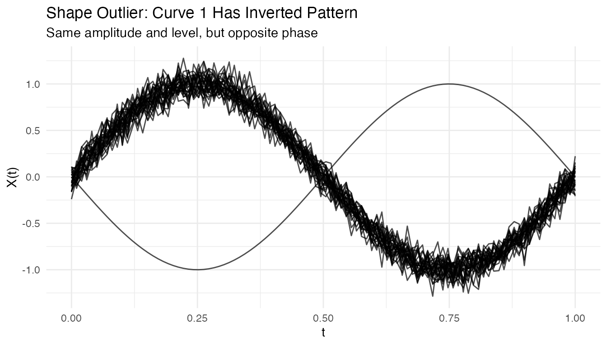
out_shape <- outliers.depth.pond(fd_shape, nb = 1000, seed = 123)
cat("Detected shape outlier:", out_shape$outliers, "\n")
#> Detected shape outlier: 1 28Amplitude Outliers
Curves with unusual amplitude (larger or smaller scale):
# Create clean data with just an amplitude outlier
X_amp <- matrix(0, n, m)
for (i in 1:n) {
X_amp[i, ] <- sin(2 * pi * t_grid) + rnorm(m, sd = 0.1)
}
X_amp[1, ] <- 3 * sin(2 * pi * t_grid) # 3x larger amplitude
fd_amp <- fdata(X_amp, argvals = t_grid)
# Visualize the amplitude outlier
plot(fd_amp) +
labs(title = "Amplitude Outlier: Curve 1 Has 3x Larger Scale",
subtitle = "Same shape and center, but much larger oscillations")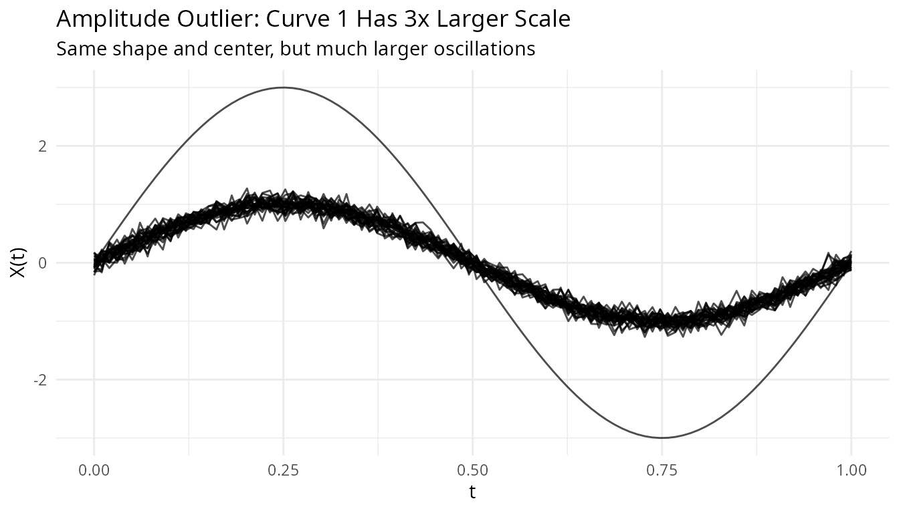
out_amp <- outliers.depth.pond(fd_amp, nb = 1000, seed = 123)
cat("Detected amplitude outlier:", out_amp$outliers, "\n")
#> Detected amplitude outlier: 1Tuning Parameters
Number of Bootstrap Samples
More bootstrap samples give more stable results but take longer:
# Compare with different nb values
out_nb50 <- outliers.depth.pond(fd, nb = 50, seed = 123)
out_nb200 <- outliers.depth.pond(fd, nb = 200, seed = 123)
cat("nb=50 outliers:", out_nb50$outliers, "\n")
#> nb=50 outliers: 1 2 3
cat("nb=200 outliers:", out_nb200$outliers, "\n")
#> nb=200 outliers: 1Trim Proportion
For outliers.depth.trim, the trim proportion controls
sensitivity:
# More aggressive trimming
out_trim05 <- outliers.depth.trim(fd, trim = 0.05, seed = 123)
out_trim20 <- outliers.depth.trim(fd, trim = 0.2, seed = 123)
cat("trim=0.05 outliers:", out_trim05$outliers, "\n")
#> trim=0.05 outliers: 1 3
cat("trim=0.20 outliers:", out_trim20$outliers, "\n")
#> trim=0.20 outliers: 1 2 3 10 29 30Handling High Contamination
When outlier contamination is high, use robust methods:
# Create data with 20% outliers
X_contam <- X
n_outliers <- 6
for (i in 1:n_outliers) {
X_contam[i, ] <- sin(2 * pi * t_grid) + rnorm(1, 0, 2)
}
fd_contam <- fdata(X_contam, argvals = t_grid)
# Depth-trim with higher trim proportion
out_contam <- outliers.depth.trim(fd_contam, trim = 0.2, seed = 123)
cat("Detected outliers:", out_contam$outliers, "\n")
#> Detected outliers: 1 2 3 4 5 6
cat("True outliers: 1-6\n")
#> True outliers: 1-6Visualizing Depth Distribution
# Compute depths
depths <- depth.FM(fd)
# Create histogram
library(ggplot2)
df_depths <- data.frame(
curve = 1:n,
depth = depths,
type = ifelse(1:n %in% c(1, 2, 3), "Outlier", "Normal")
)
ggplot(df_depths, aes(x = depth, fill = type)) +
geom_histogram(bins = 10, alpha = 0.7, position = "identity") +
labs(title = "Distribution of Functional Depths",
x = "Depth", y = "Count", fill = "") +
theme_minimal()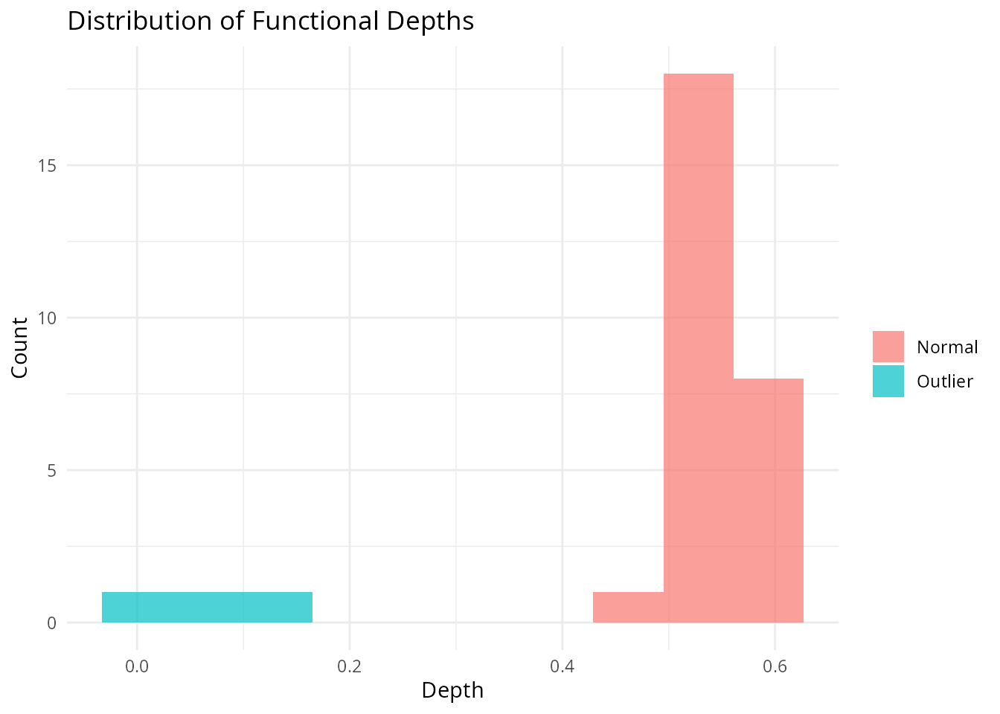
Performance
The LRT method uses a parallel Rust backend for speed:
# Benchmark with larger dataset
X_large <- matrix(rnorm(200 * 100), 200, 100)
fd_large <- fdata(X_large)
system.time(outliers.lrt(fd_large, nb = 200, seed = 123))
#> user system elapsed
#> 0.456 0.000 0.123Outliergram and MS-Plot
For visual outlier detection, fdars provides two powerful diagnostic plots.
The Outliergram
The outliergram plots the Modified Epigraph Index (MEI) against Modified Band Depth (MBD):
og <- outliergram(fd)
plot(og)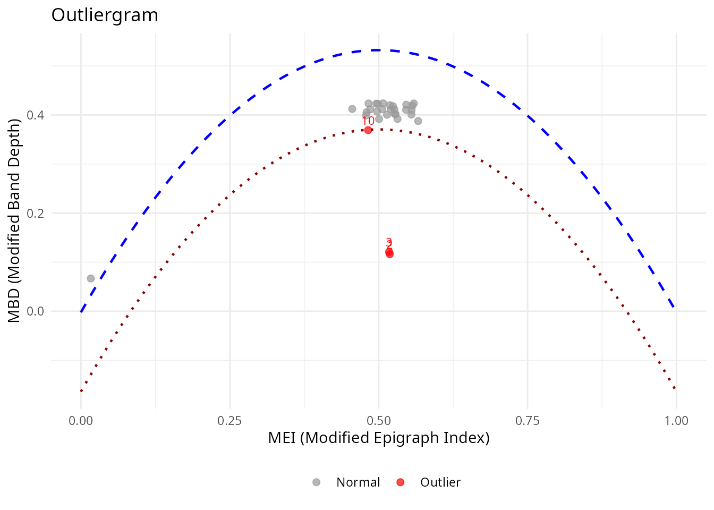
How to read the outliergram:
| Position | MEI (X-axis) | MBD (Y-axis) | Interpretation |
|---|---|---|---|
| Bottom-left | Low | Low | Extreme outlier (unusual shape AND position) |
| Bottom-right | High | Low | Magnitude outlier (shifted up/down) |
| Top-left | Low | High | Shape outlier (unusual pattern, typical level) |
| Top-right | High | High | Normal curve (typical shape and position) |
The parabolic boundary marks the theoretical limit for non-outlying curves. Points below this boundary are flagged as outliers.
The Magnitude-Shape Plot (MS-Plot)
The MS-plot separates magnitude outlyingness from shape outlyingness:
ms <- magnitudeshape(fd)
plot(ms)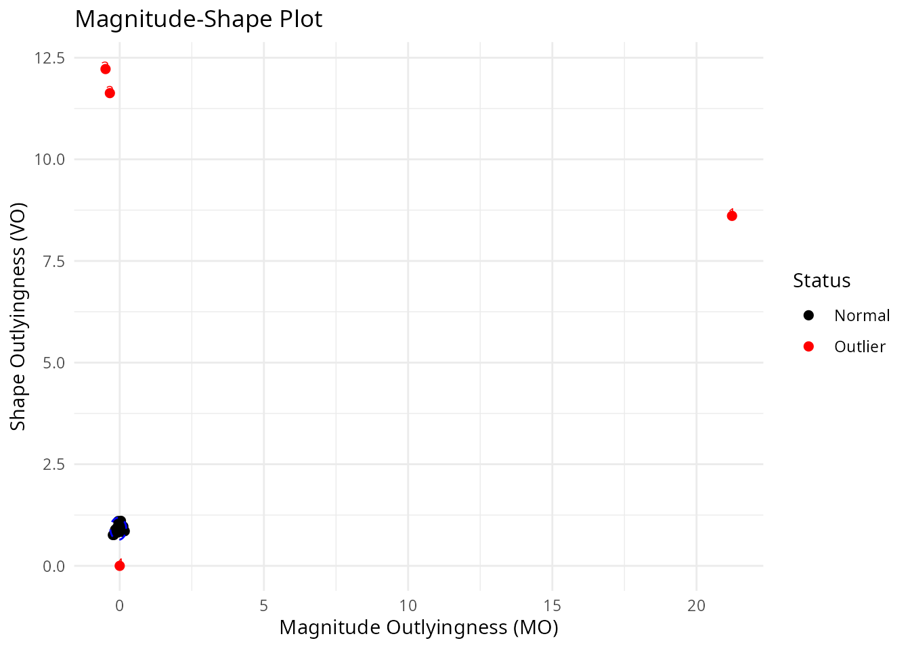
How to read the MS-plot:
| Quadrant | Magnitude Outlyingness | Shape Outlyingness | Type |
|---|---|---|---|
| Bottom-left | Low | Low | Normal curve |
| Bottom-right | High | Low | Magnitude outlier only |
| Top-left | Low | High | Shape outlier only |
| Top-right | High | High | Combined outlier (both types) |
The MS-plot is particularly useful when you want to understand why a curve is an outlier - is it because of its level (magnitude) or its pattern (shape)?
Labeling Outliers by ID or Metadata
When fdata has IDs or metadata, you can label outliers in plots:
# Create fdata with IDs and metadata
meta <- data.frame(
subject = paste0("S", sprintf("%02d", 1:n)),
group = rep(c("A", "B"), length.out = n)
)
fd_labeled <- fdata(X, argvals = t_grid,
id = paste0("patient_", 1:n),
metadata = meta)
# Outliergram with patient IDs
og_labeled <- outliergram(fd_labeled)
plot(og_labeled, label = "id")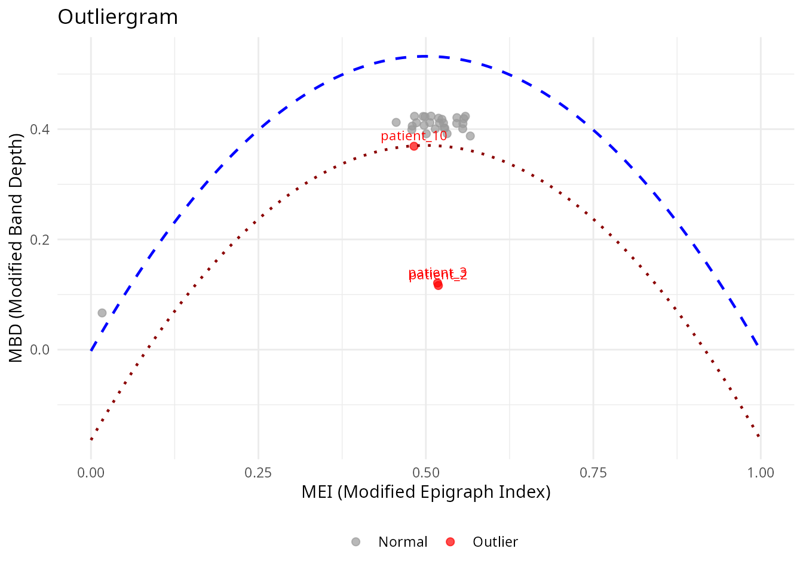
# Or with metadata column
plot(og_labeled, label = "subject")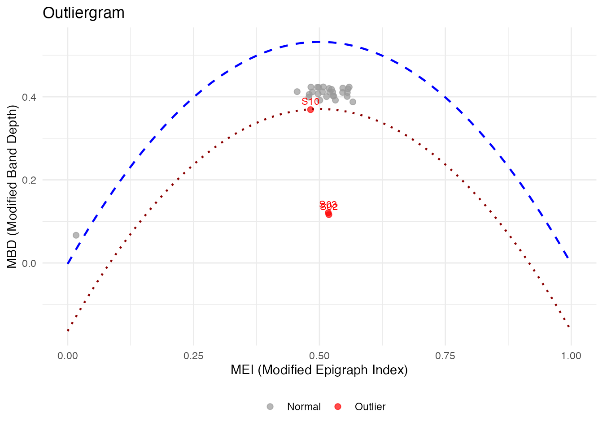
# Label ALL points, not just outliers
plot(og_labeled, label = "id", label_all = TRUE)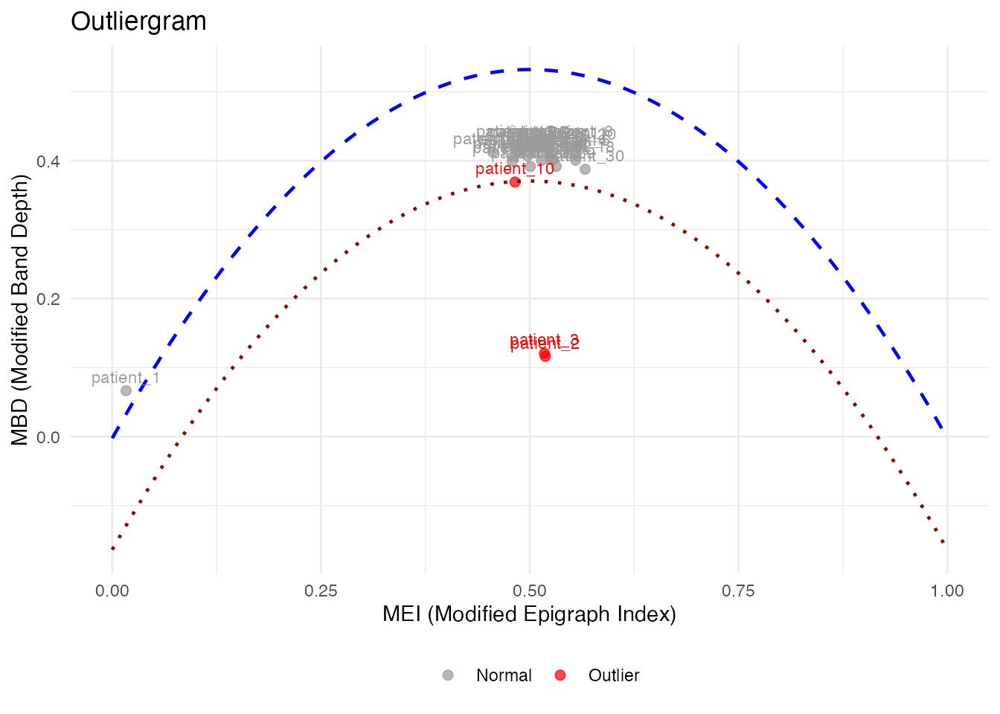
# magnitudeshape with custom labels
magnitudeshape(fd_labeled, label = "subject")Method Selection Guide
| Method | Best For | Sensitivity |
|---|---|---|
| depth.pond | General purpose | Moderate |
| depth.trim | Known contamination rate | Controllable |
| LRT | Magnitude outliers | High |
| outliergram | Shape outliers | Visual |
| magnitudeshape | Both magnitude & shape | Visual |
Best Practices
- Start with visualization: Plot the data to understand outlier types
- Try multiple methods: Different methods catch different outliers
- Use sufficient bootstrap samples: At least 100 for stable results
- Consider domain knowledge: Some “outliers” may be valid observations
- Validate findings: Check detected outliers make sense contextually
See Also
-
vignette("depth-functions", package = "fdars")— functional depth measures and ranking -
vignette("streaming-depth", package = "fdars")— real-time depth computation for streaming data -
vignette("clustering", package = "fdars")— functional data clustering
References
- Febrero, M., Galeano, P., and González-Manteiga, W. (2008). Outlier detection in functional data by depth measures, with application to identify abnormal NOx levels. Environmetrics, 19(4), 331-345.
- Hyndman, R.J. and Shang, H.L. (2010). Rainbow plots, bagplots, and boxplots for functional data. Journal of Computational and Graphical Statistics, 19(1), 29-45.